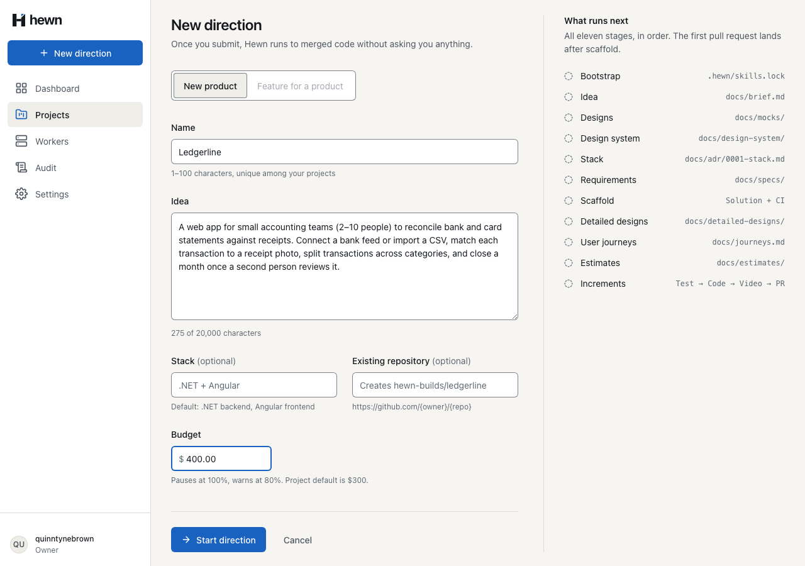
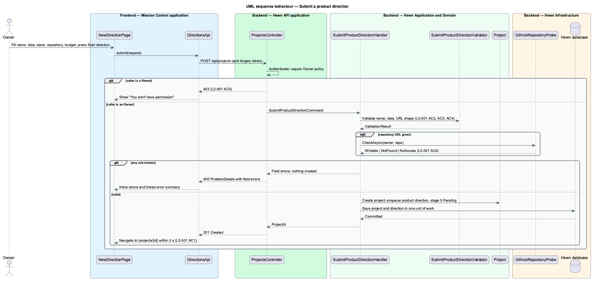
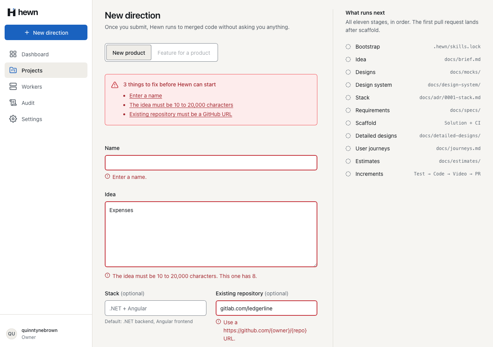
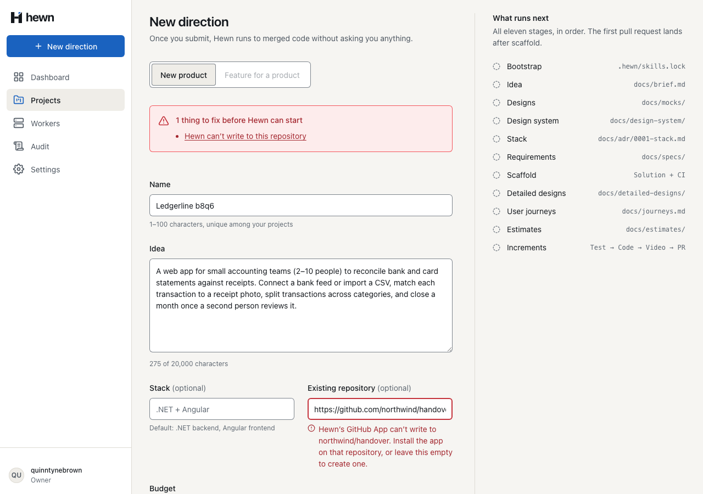
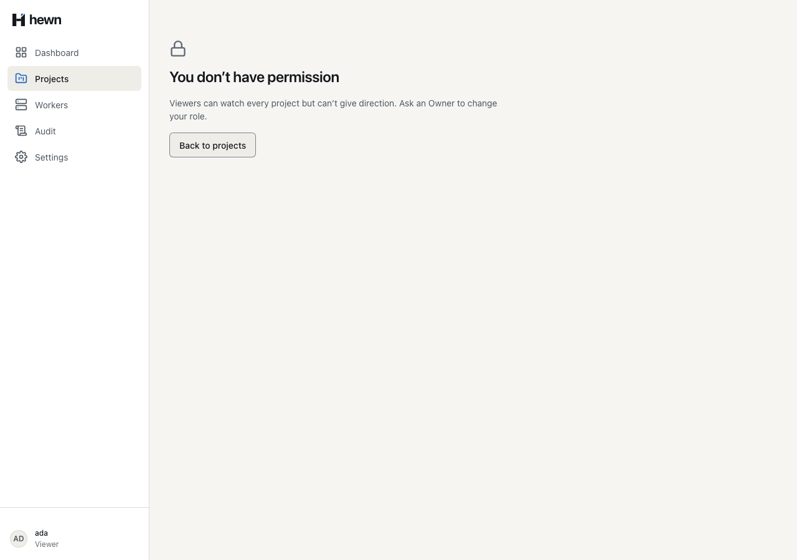
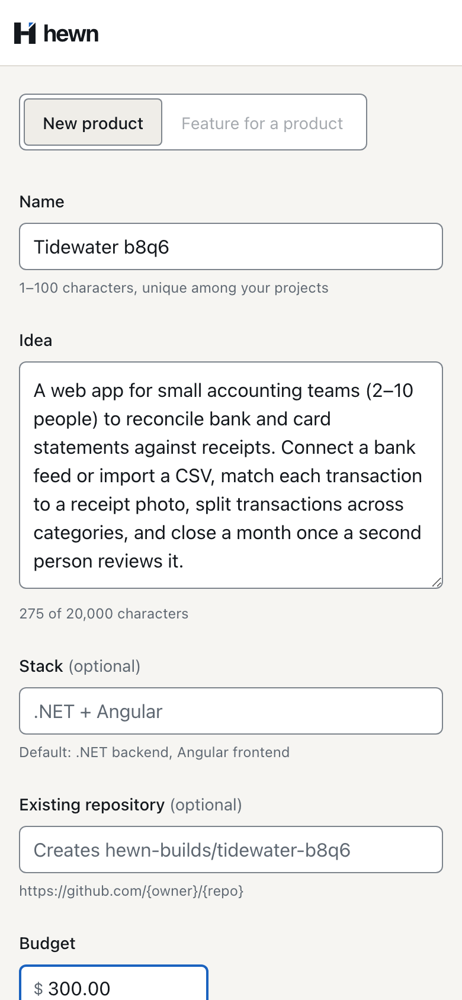
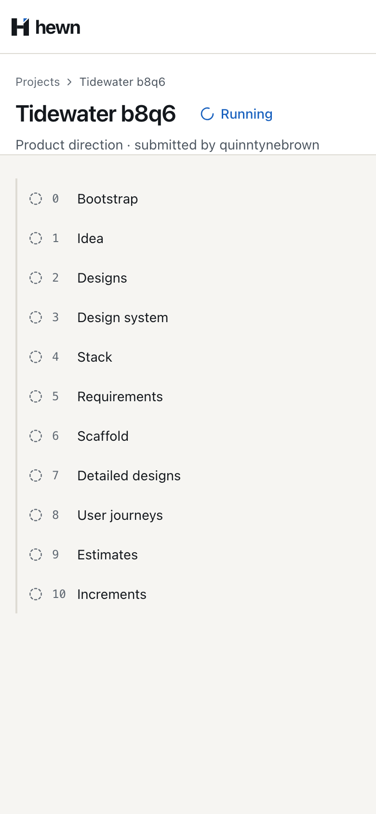
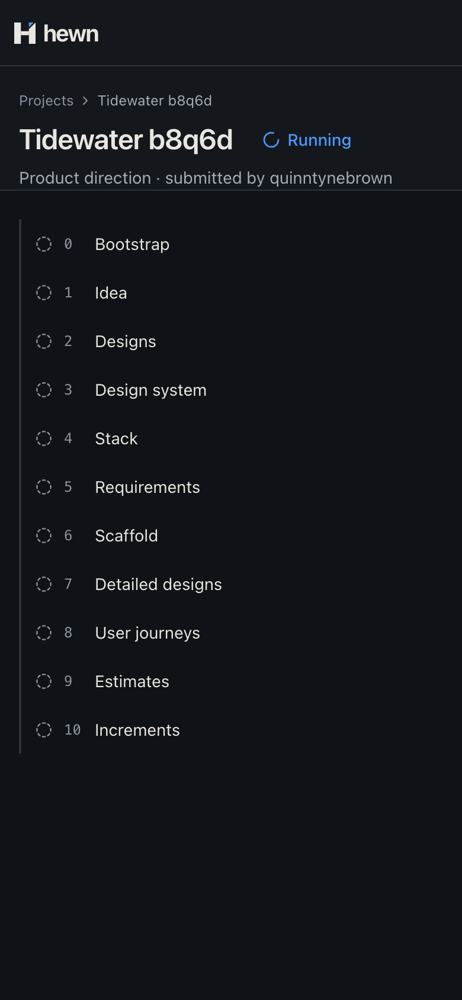

An Owner gives direction once. Hewn creates the project, queues the direction and opens the project page.


db.Projects.Add(project);
await events.AppendAsync(
project.Id,
"DirectionQueued",
new { directionId = direction.Id, kind = direction.Kind.ToString(), stage = 0, stageStatus = StageStatus.Pending.ToString() },
cancellationToken);
Sequence 1 for the project; every later event takes the next number.
public async Task<SubmitProductDirectionResult> Handle(SubmitProductDirectionCommand command, CancellationToken cancellationToken)
{
RepositoryRef? repository = null;
if (!string.IsNullOrWhiteSpace(command.RepositoryUrl))
{
GitHubRepositoryUrl.TryParse(command.RepositoryUrl, out var parsed);
repository = parsed;
await EnsureWritableAsync(parsed, cancellationToken);
}
var project = Project.CreateWithProductDirection(
command.Name!,
command.Idea!,
string.IsNullOrWhiteSpace(command.StackPreference) ? null : command.StackPreference.Trim(),
repository,
command.BudgetUsd,
RuleFor(c => c.Idea)
.Must(i => i is { Length: >= Project.MinIdeaLength and <= Project.MaxIdeaLength })
.WithMessage(c => $"The idea must be 10 to 20,000 characters. This one has {c.Idea?.Length ?? 0:N0}.")
.WithState(_ => "The idea must be 10 to 20,000 characters");
RuleFor(c => c.RepositoryUrl)
.Must(u => string.IsNullOrWhiteSpace(u) || GitHubRepositoryUrl.TryParse(u, out _))
.WithMessage("Use a https://github.com/{owner}/{repo} URL.")
.WithState(_ => "Existing repository must be a GitHub URL");
Inline message · summary line
[HttpPost]
[Authorize(Policy = AuthSetup.OwnerPolicy)]
[ProducesResponseType<SubmitProductDirectionResult>(StatusCodes.Status201Created)]
public async Task<IActionResult> Submit(SubmitProductDirectionRequest request, CancellationToken cancellationToken)
{
var result = await mediator.Send(
new SubmitProductDirectionCommand(request.Name, request.Idea, request.StackPreference, request.RepositoryUrl, request.BudgetUsd),
cancellationToken);
return Created($"/api/projects/{result.ProjectId}", result);
}
// Acceptance Test // Traces to: L2-001, L2-039, L2-043 // Description: An Owner submits a product direction; invalid input, an unwritable repository and a Viewer create nothing





